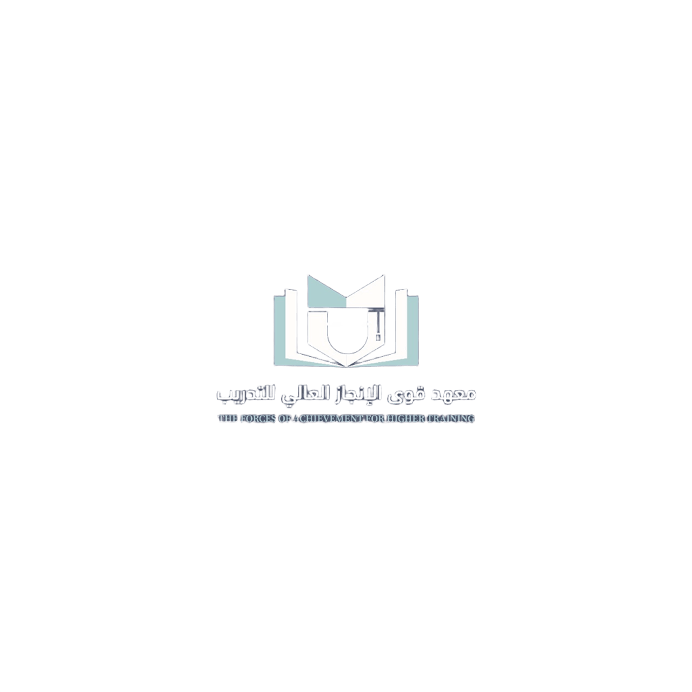

المتصفح لا يدعم تشغيل الفيديو

مرحباً بكم في موقع التدريب العملي لدبلوم الأمن السيبراني
إشراف: م. خالد الزيداني
⚠️ هذا الموقع تعليمي فقط، وليس للاستخدام الغير قانوني ⚠️
مختبر الأمن السيبراني
الموارد التعليمية